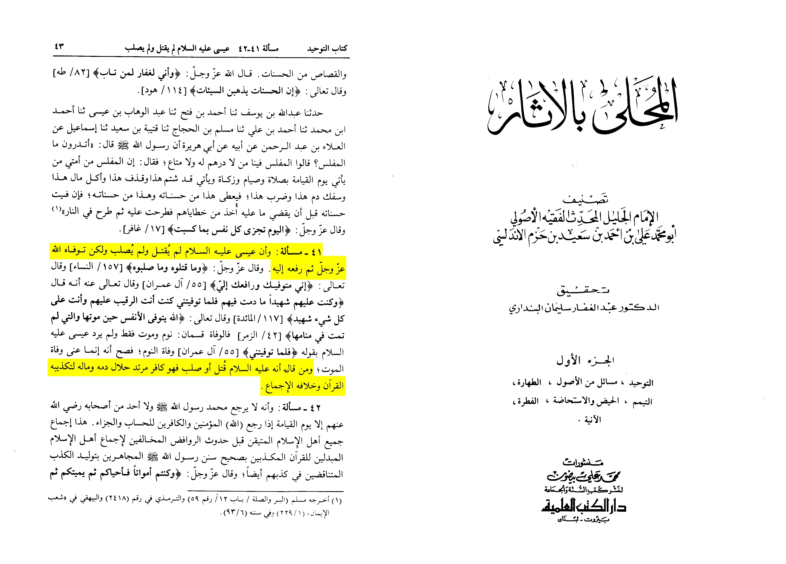

The Ulama ijma regading عيسى بن مريم عليه السلام:
whoever says عيسى بن مريم عليه السلام was killed or crucified is a disbelieving apostate, his blood is halal to take and likewise his wealth is permissible
to take for he has belied the Quran and opposed the concensus
